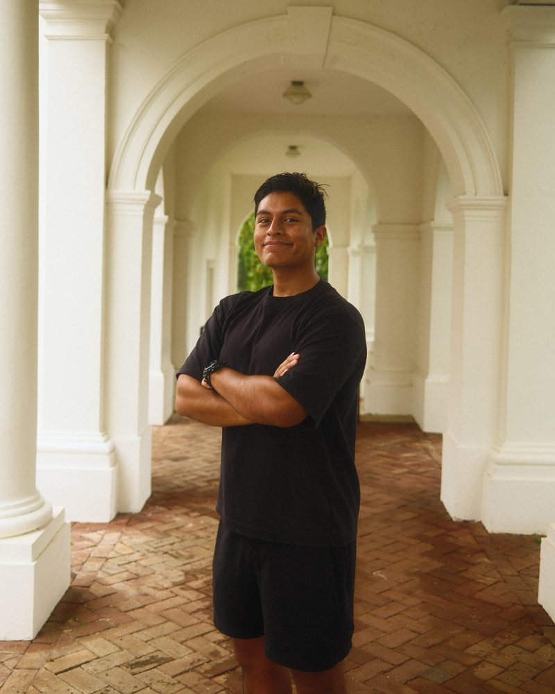
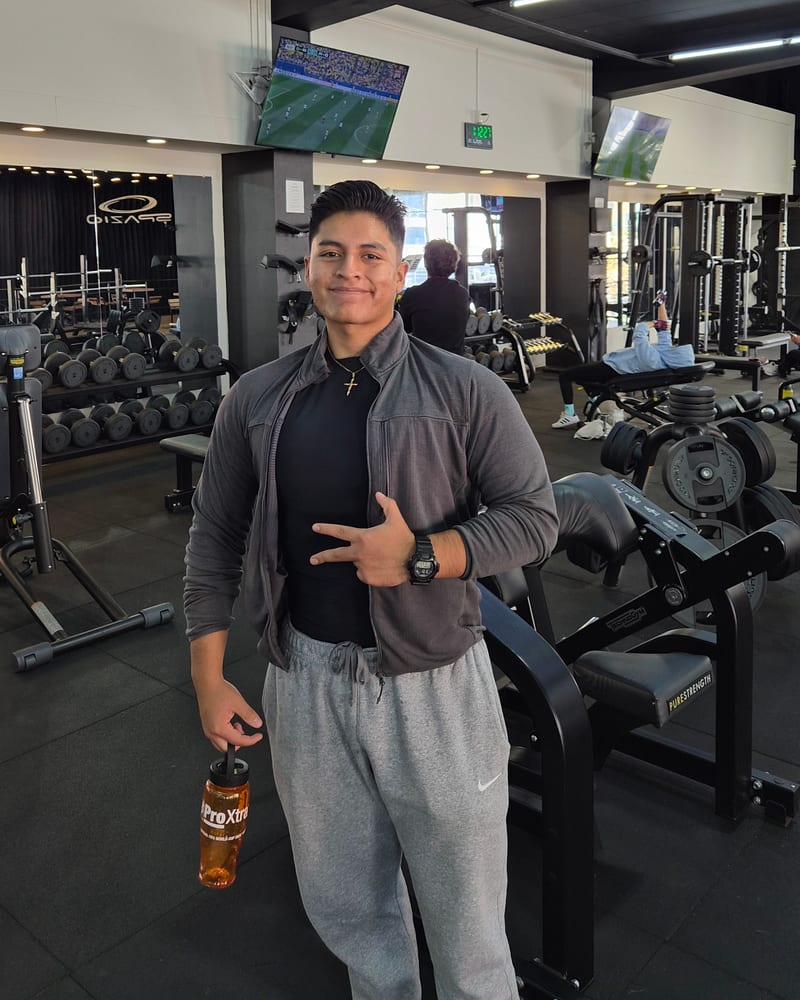
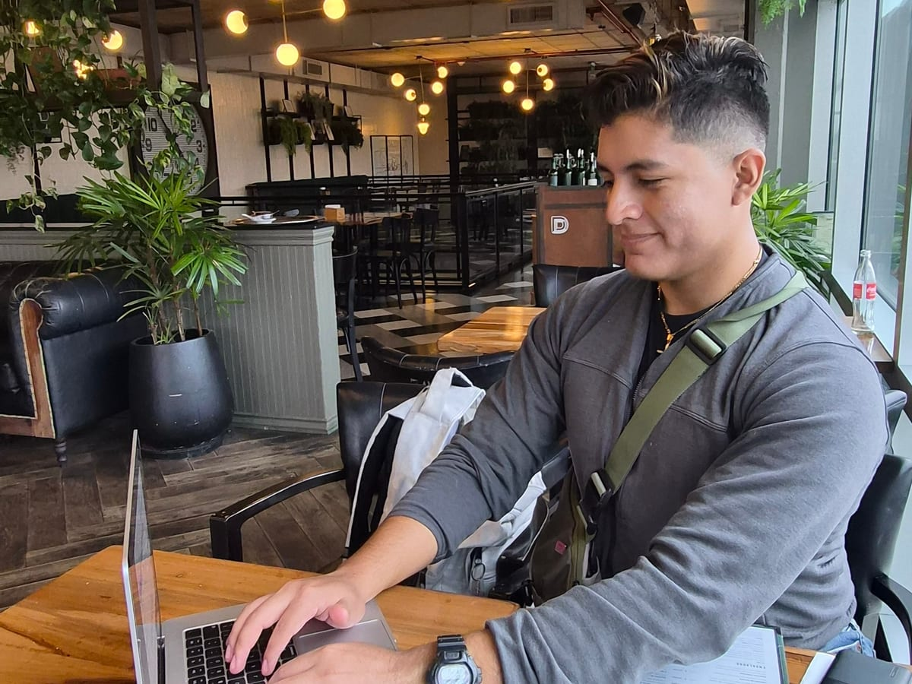

Loudoun Nature Conservation Project
Rebuilt a nonprofit's site as a static Astro site on Cloudflare, cutting hosting from $178 to about $12 a year. Staff edit pages in the browser, every change version-controlled.
Jose Ricardo Herrera, fourth year CS at UVA. This is my home on the web: what I'm building, what I'm learning on guitar and piano, the Korean and Japanese I'm studying, the gym, and the stuff in between. All of it in one place, and everything on the graph below actually happened. Say hi if you want to talk about any of it!

Getting the retail ERP ready for its production cutover this fall, Korean 101 and chapter 1 of Integrated Korean, learning Snow by RHCP, and working on getting the gym back to consistent.
A GitHub contribution graph, but for everything. Code pulls live from GitHub. The rest I log by hand, so a thin row means I didn't do the thing.


A video journal of my life: playing, gameplay, travel. The goal is weekly, and showing people what being a UVA student is actually like.
Watch on YouTube ↗Rebuilt a nonprofit's site as a static Astro site on Cloudflare, cutting hosting from $178 to about $12 a year. Staff edit pages in the browser, every change version-controlled.
Replacing a retail store's 15+ year old system with self-hosted Odoo 18: custom Python modules, 500+ products migrated, cutover this fall.
Questions about any of it, from Snow to DNS? Reach out any time, I like the questions.
Hiring? The work version of me lives on Work with me, with my resume.